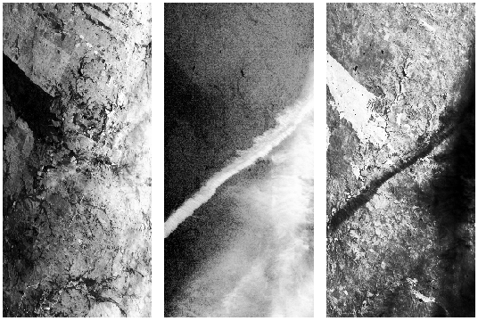
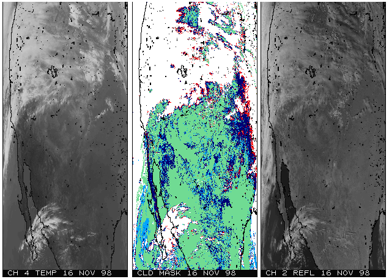

Mark L. Chang
|
Mark L. Chang |
|
research:: |
BackgroundIn 1991, NASA initiated a program to study Earth as an environmental system. This program is called Earth Science Enterprise (ESE). The flagship of the ESE program will be the launch of the first Earth Observation System (EOS) satellite, the EOS-AM1. The design of the EOS spacecraft allows it to house five different instruments capable of collecting and transmitting an average of 918 Giga-bytes of data per day. This far surpasses the data rates of any previous NASA satellites. So much, in fact, that NASA is looking to adaptive computing as a cheap alternative to super- and parallel-computers to help digest this massive processing workload. In order to further my own research, I am investigating these NASA algorithms and applications. The intuition is that these applications will serve as sort of benchmarks to help determine the overall architecture of a future hybrid processor. A second result of this research will be in the development of "driver" applications for the proposed MATCH Compiler, a MATLAB to heterogeneous embedded systems compiler. These applications will serve as the basis for a MATLAB version to exercise and test the results of this compiler. To this end, I am collaborating with researchers at the ASDP Group (Adaptive Scientific Data Processing) at NASA Goddard Spaceflight Center. This research is supported both by DARPA and funding directed at the MATCH project, here at Northwestern. For a more detailed overview of the ESE program and the processing problem that the EOS-AM1 spacecraft poses, please view my presentation: Adaptive Computing for NASA Applications. Multispectral Image ClassificationOne of the key algorithms that scientists will use to evaluate MODIS (one of the instruments on board the EOS-AM1 spacecraft) data will be some form of multispectral image classification. This algorithm can be viewed as a form of compression of data that takes raw data that is not usable by humans, and mapping it into several classes that can be analyzed by humans. In this way, it is similar to clustering analysis in its reduction of the data set. Ultimately, in the example that I am working with, it is used to determine terrain in an image.The algorithm takes in a raw image of several spectral bands and turns them into human-usable classified versions. The image on the left is the raw data, and the image on the right is the processed result. Click for a larger image.
The different colors in the processed image represent different styles of terrain, such as barren, urban, fields, forest, tundra, etc. Simply, the algorithm compares the input pixel vector (a composite vector of all spectral bands) with a set of training vectors that have been previously defined as belonging to certain terrain class. The algorithm finds the probability density function based upon the weighted sum of mean square distances between the input vector and the training vectors within each class. The class with the highest value (highest probability) is the class the input pixel vector is assigned to. A typical image frame consists of 512 x 512 pixels, each pixel being more than 40 bits deep. Each of these vectors is compared to, again, typically five to ten different classes, each with 400-1000 "training vectors". Thus, for each frame, there is a lot of computation required. Multiply this over time, and there is an immense amount of calculation. This large load of simple calculations and loops is nearly ideal for an adaptive computing computational engine. In a perfect world, simply adding more hardware resources increases the parallelism and the performance of our algorithm, once it is mapped to the hardware efficiently. Currently, I have a working C-based version of the algorithm,
dubbed The hardware that we have at our disposal is the WildChild board from Annapolis Microsystems. This board has a total of 9 FPGAs, denoted PE0 through PE8, each with a small 512k (PE0) or 256k (PE1-PE8) local memory, all connected in a systolic array. Additionally, PE0, PE1, and PE8 all have bidirectional FIFOs. More detailed information is available through the following links:
Cloud Cover MaskAnother interesting problem that seems to lend itself to adaptive computing is the generation of a what is called a cloud cover mask from raw image maps. A lower-level processing step than Multispectral Image Classification is this cloud cover mask generation. It is considered lower-level because it operates on all pieces of data that are downlinked from the MODIS instrument. Instead of distilling the data into human-usable form as in the case of Multispectral image Classification, cloud cover mask generation adds to the data set, setting a confidence flag for each image pixel that indicates the level of certainty that there is a cloud obscuring this pixel. Since this algorithm is applied to each and every pixel in the data set, it needs to follow some restrictions:
To illustrate the difficulty and hint at the approach the algorithm needs to take, I show an example of a multispectral image that is partially obstructed by cloud.  These three images are of the same coordinates at the same time, but in different spectrums. What we are looking at is called a subvisual contrail. The left panel is the 0.66um (micro-meter) channel. Notice, you can't see the cloud at all. The right panel is the 11um channel, where dark is cold and light is warm. Here you can see the contrail, but it would be difficult to fully define its extent. The center panel is the 1.88um channel, and here it is clear that there is a contrail and where it is. With all three panels, we can come up with a relatively good cloud cover mask. A different result for a cloud cover mask is shown below, in the center panel, where white represents most confident cloud covering and green is most confident clear sky.  Thus, the algorithm's approach is to run a particular group of thresholding tests for each of the channels available, and then determine a final cloud mask from a weighted combination of the outputs from the individual tests. This algorithm lends itself well to an adaptive engine. The tests for cloud cover are very simple thresholding tests that can be done in parallel. Additionally, with enough hardware, multiple pixels can be operated on simultaneously, further increasing performance. Currently, I am obtaining data sets and example code from several sources including Universities and NASA scientists. More information can be found at the following links:
|
{kind=link}
{kind=link}